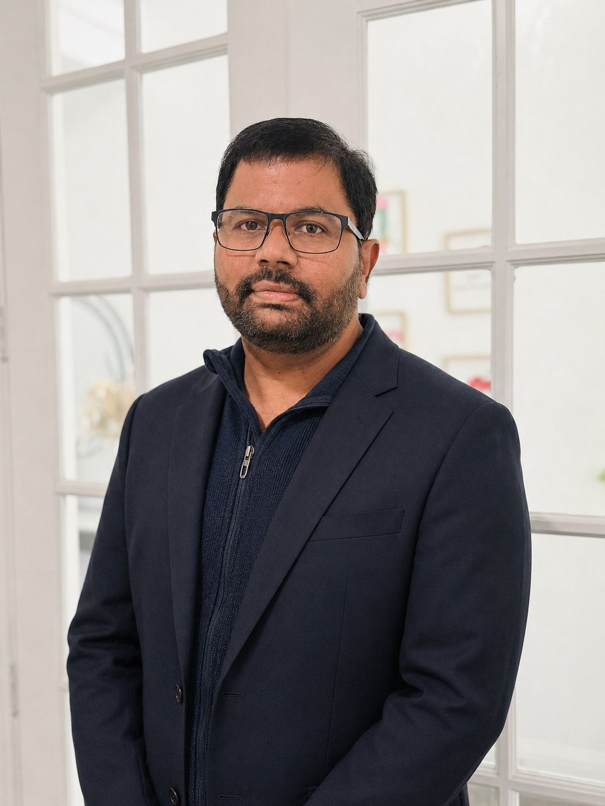

Durga Prasad Patsa
I am an Enterprise Data Architect and Independent Researcher with over 18 years of experience designing, modernizing, and optimizing enterprise-scale data platforms across cloud and on-premises environments.
My expertise spans Microsoft Azure, Microsoft Fabric, SQL Server, Azure Data Factory, Databricks, cloud data engineering, artificial intelligence, machine learning, and enterprise analytics. Throughout my career, I have helped organizations design scalable data platforms, modernize legacy systems, implement cloud-native architectures, and deliver data-driven solutions that support business transformation.
My research focuses on Artificial Intelligence, Large Language Models, enterprise data engineering, intelligent data platforms, autonomous ETL systems, cloud analytics, data observability, and database optimization. I am particularly interested in applying AI to solve practical business and engineering challenges.
This website serves as a central hub for my research publications, technical articles, software projects, presentations, videos, and professional contributions in Artificial Intelligence, Data Engineering, Cloud Computing, and Enterprise Data Architecture.